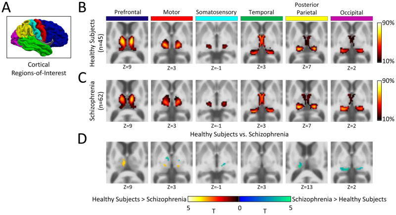

Manipulating image files
ImageMagick (linux, Mac)
Installation
Go to the ImageMagic installation page for detailed instructions for different operating systems.
Utilities
The following table presents a list of utilities that are part of ImageMagick and that can be used for different purposes. Each tool will have input and output options. Check this section for a complete list of these options.
When specifying a color in any ImageMagick command, you can use the name of any recognized color, the RGB value, or the Hex value.
When specifying a shape to draw on an image, you can use any of the valid shapes.
| Utility | Use | Syntax | Links |
|---|---|---|---|
magick |
This command now replaces convert, which is deprecated. Change image format, blur, crop, draw on, flip, merge, resample, and more. Writes output on a new file. |
magick [input-options] input-file(s) [output-options] output-file |
Man page, Documentation |
identify |
Obtain information about an image. | identify [options] input-file |
Man page, Documentation |
mogrify |
Resize an image, blur, crop, draw on, flip, merge, resample, and more. Re-writes original file. | mogrify [options] input-file |
Man page, Documentation |
composite |
Overlaps one image over another. | composite [ options ... ] change-file base-file [ mask-file ] output-image |
Man page, Documentation |
montage |
Combines different images, adds border, frame, and much more. | montage input-file[s] [options] output-file |
Man page, Documentation |
compare |
Compare two images. | compare input-file input-file [options] output-file |
Man page, Documentation |
stream |
Writes the pixel components of an img a row at a time into different storage formats. | compare input-file input-file [options] output-file |
Man page, Documentation |
display |
Displays an image or image sequence. | display [options] input-file |
Man page, Documentation |
animate |
Animates an image sequence. | animate [options] input-file |
Man page, Documentation |
import |
Saves any visible window as an img file. Captures a single window, the entire screen, or any rectangular portion of the screen. | import [options] output-file |
Man page, Documentation |
conjure |
Interprets and executes scripts written in the Magick Scripting Language (MSL). | conjure [options] script.msl |
Man page, Documentation |
ImageMagick Format escapes
| Escape | Meaning |
|---|---|
%b |
File size (i.e. 123KB) |
%c |
Image class and colorspace |
%d |
Directory path of the image file |
%e |
File name extension |
%f |
File name |
%g |
Geometry: <width>x<height>{+-}<xoffset>{+-}<yoffset> |
%h |
Image height in pixels |
%m |
Image format (i.e. PNG) |
%Q |
Compression quality (for JPEG/PNG/MIFF) |
%r |
Image class only (DirectClass or PseudoClass) |
%t |
File name without extension |
%U |
Resolution unit (PixelsPerInch, PixelsPerCentimeter, or Undefined) |
%w |
Image width in pixels |
%x |
Horizontal resolution (pixels per unit). See %U for the unit. |
%y |
Vertical resolution (pixels per unit). See %U for the unit. |
%z |
Depth (bits per channel) |
%[channels] |
List of channels |
%[colorspace] |
Colorspace |
%[EXIF:tag] |
Image metadata. This is the list of acceptable tags. If a tag is not available for the image, ImageMagick will print an empty string. |
%[fx:expression] |
Custom expression. This is a mathematical formula that can reference pixels, image dimensions, channels or constants. Please see the ImageMagick expressions sections for more details. |
%[IPTC:tag] |
IPTC metadata (captions, keywords, etc.) |
%[mean] |
Mean pixel intensity |
%[profile:name] |
ICC/ICM or other image profile |
%[property:name] |
Image property (generic metadata) |
%[standard-deviation] |
Standard deviation of pixel intensity |
ImageMagick expressions
ImageMagick expressions allow you to compute custom values using image properties.
Image properties that can be used in expressions:
- Basic image properties:
w(image width in pixels),h(image height) in pixels,u(total number of pixels),channels(number of channels),depth(bits per channel),colorspace,size,page.x(x-offset of virtual canvas),page.y(y-offset of virtual canvas),page.width(width of virtual canvas),page.height(height of virtual canvas). - Pixel values:
p{X,Y}.r(red channel of pixel at X,Y),p{X,Y}.g(green channel of pixel at X,Y),p{X,Y}.b(blue channel of pixel at X,Y),p{X,Y}.a(alpha of pixel at X,Y). - Arithmetic operators:
+,-,*,/,%(modulus),^power,()(grouping). - Logical operators:
<,>,<=,>=,==,!= - If/else expression:
%[fx:w>h ? "landscape" : "portrait"]if weight is greater than height, printslandscape, else printsportrait. - Functions:
abs(x),sin(x),cos(x),tan(x),log(x),exp(x),sqrt(x),min(a,b),max(a,b),floor(x),ceil(x). - Channel statistics:
mean.r,mean.g,mean.b,standard_deviation.r,standard_deviation.g,standard_deviation.b.
ImageMagick EXIF tags
| EXIF Tag | Description |
|---|---|
DateTime |
Date and time of image modification |
DateTimeOriginal |
Original date and time the photo was taken |
DateTimeDigitized |
Date and time the image was digitized |
Make |
Camera manufacturer |
Model |
Camera model |
Software |
Software used to process the image |
ExposureTime |
Shutter speed |
FNumber |
Aperture (f-stop) |
ISOSpeedRatings |
ISO sensitivity |
ExposureProgram |
Exposure program used (e.g., Manual, Aperture priority) |
FocalLength |
Focal length of the lens |
MeteringMode |
Metering mode (how the camera measured light) |
Flash |
Flash status (on/off, fired, etc.) |
WhiteBalance |
White balance mode |
Orientation |
Image orientation (rotation) |
GPSLatitude |
Latitude where photo was taken |
GPSLongitude |
Longitude where photo was taken |
GPSAltitude |
Altitude where photo was taken |
ColorSpace |
Color space of the image |
ExifImageWidth |
Width recorded in EXIF (may differ from actual width) |
ExifImageHeight |
Height recorded in EXIF (may differ from actual height) |
ImageMagick shapes
| Shape | Syntax | Notes |
|---|---|---|
| Point | point x,y |
Specified by an ordered pair of integer coordinates. |
| Line | line x0,y0 x1,y1 |
Requires a start and end point. |
| Rectangle | rectangle x0,y0 x1,y1 |
Specified by the pair of points at the upper left and lower right corners. |
| Round rectangle | roundRectangle x0,y0, x1,y1 wc,hc |
Takes same corner points as rectangle, followed by the width and height of the rounded corners to be removed. |
| Arc | arc x0,y0 x1,y1 a0,a1 |
Requires two corners used to create a rectangle, followed by the start and end angles of the arc in degrees. |
| Ellipse | ellipse x0,y0 rx,ry a0,a1 |
Requires the center point, the horizontal and vertical radius, and the start and end angles in degrees. |
| Circle | circle x0,y0 x1,y1 |
Give the center and any point on the perimeter. Can make a disk (filled) or circle (unfilled). |
| Polyline | polyline x0,y0 ... xn,yn |
Requires three or more points to define their perimeters. This is simply a polygon in which the final point is not stroked to the start point. |
| Polygon | polygon x0,y0 ... xn,yn |
Requires three or more points to define their perimeters. |
| Bezier | bezier x0,y0 ... xn,yn |
Creates a spline curve and requires three or points to define its shape. |
| Path | path specification |
represents an outline of an object, defined in terms of moveto (set a new current point), lineto (draw a straight line), curveto (draw a Bezier curve), arc (elliptical or circular arc) and closepath (close the current shape by drawing a line to the last moveto) elements. |
| Image | image operator x0,y0 w,h filename |
Used to composite an image with another image. |
| Text | text x,y text_to_display |
Add text in coordinates x,y of image. |
ImageMagick options
| Option | Arguments | Description | Category | magick | identify | mogrify | composite | montage | compare | stream | display | animate | import | conjure |
|--------|-----------|--------------|-----------|----------|-----------|-----------|-----------|----------|----------|----------|----------|----------|----------|
| -adjoin | No arguments | used to control how multi-image files are written | bi-functional | no | no | yes | no | yes | yes | no | no | no | yes | no |
| -affine | matrix | specify an affine transformation matrix that can then be applied to an image with -transform | bi-functional | no | no | yes | yes | yes | no | no | no | no | no | no |
| -alpha | option | control the alpha channel of an image, which represents transparency | bi-functional | no | yes | yes | yes | yes | yes | no | yes | yes | no | no |
| -antialias | No arguments | enable or disable antialiasing, which smooths jagged edges in text, shapes, or lines | bi-functional | no | yes | yes | no | no | no | no | yes | no | no | no |
| -authenticate | password | provide a password or key when reading images that are encrypted | bi-functional | no | yes | yes | yes | yes | yes | yes | yes | yes | no | no |
| -attenuate | factor | scale the effect of the next image-editing operation | bi-functional | no | no | yes | no | no | no | no | no | no | no | no |
| -background | color | background color | bi-functional | no | no | yes | no | no | yes | no | no | no | no | no |
| -bias | value | add bias when convolving an image | input-option | no | no | yes | no | no | no | no | no | no | no | no |
| -black-point-compensation | No arguments | | bi-functional | no | no | yes | no | no | no | no | no | no | no | no |
| -blue-primary | point | chromaticity blue primary point | bi-functional | no | no | yes | yes | yes | no | no | no | no | no | no |
| -bordercolor | color | border color | bi-functional | no | no | yes | yes | yes | no | no | no | no | no | no |
| -caption | string | assign a caption to an image | bi-functional | no | no | yes | no | yes | no | no | no | no | no | no |
| -clip | No arguments | along the first path from the 8BIM profile | input-option | no | yes | yes | no | no | no | no | yes | no | no | no |
| -clip-mask | filename | associate a clip mask with the image | input-option | no | yes | yes | no | no | no | no | no | no | no | no |
| -clip-path | id | clip along a named path from the 8BIM profile | input-option | no | yes | yes | no | no | no | no | yes | no | no | no |
| -colorspace | type | alternate image colorspace | bi-functional | no | yes | yes | yes | yes | yes | yes | yes | yes | yes | no |
| -comment | string | annotate image with comment | bi-functional | no | no | yes | yes | yes | no | no | yes | no | yes | no |
| -compose | operator | set image composite operator | bi-functional | no | no | yes | yes | yes | yes | no | no | no | no | no |
| -compress | type | type of pixel compression when writing the image | bi-functional | no | no | yes | yes | yes | yes | yes | yes | no | yes | no |
| -define | format:key=value | | output-option | no | yes | yes | yes | yes | yes | yes | yes | yes | yes | no |
| -delay | seconds | display the next image after pausing | bi-functional | no | no | yes | no | yes | no | no | yes | yes | yes | no |
| -density | geometry | horizontal and vertical density of the image | input-option | no | yes | yes | yes | yes | yes | yes | yes | yes | yes | no |
| -depth | value | image depth | bi-functional | no | yes | yes | yes | yes | yes | yes | yes | yes | yes | no |
| -direction | type | render text right-to-left or left-to-right | bi-functional | no | no | yes | no | no | no | no | no | no | no | no |
| -display | server | get image or font from this X server | bi-functional | no | no | yes | yes | yes | no | no | yes | yes | yes | no |
| -dispose | method | layer disposal method | bi-functional | no | no | yes | yes | yes | no | no | yes | yes | yes | no |
| -dither | method | apply error diffusion to image | bi-functional | no | no | yes | yes | yes | no | no | yes | yes | yes | no |
| -encoding | type | text encoding type | bi-functional | no | no | yes | yes | yes | no | no | no | no | yes | no |
| -endian | type | endianness (MSB or LSB) of the image | bi-functional | no | yes | yes | yes | yes | no | no | yes | no | yes | no |
| -family | name | render text with this font family | bi-functional | no | no | yes | no | yes | no | no | no | no | no | no |
| -features | distance | analyze image features (e.g. contrast, correlation) | bi-functional | no | yes | yes | no | no | no | no | no | no | no | no |
| -fill | color | color to use when filling a graphic primitive | bi-functional | no | no | yes | no | yes | no | no | no | no | no | no |
| -filter | type | use this filter when resizing an image | bi-functional | no | no | yes | yes | yes | no | no | yes | yes | yes | no |
| -font | name | render text with this font | bi-functional | no | no | yes | yes | yes | no | no | no | no | no | no |
| -format | string | output formatted image characteristics | bi-functional | no | yes | yes | yes | yes | yes | no | yes | yes | yes | no |
| -fuzz | distance | colors within this distance are considered equal | bi-functional | no | yes | yes | no | no | yes | no | yes | no | no | no |
| -gravity | type | horizontal and vertical text placement | bi-functional | no | no | yes | yes | yes | yes | no | yes | yes | yes | no |
| -green-primary | point | chromaticity green primary point | bi-functional | no | no | yes | yes | yes | no | no | no | no | no | no |
| -illuminant | type | reference illuminant | bi-functional | no | no | yes | no | no | no | no | no | no | no | no |
| -intensity | method | method to generate an intensity value from a pixel | bi-functional | no | no | yes | no | no | no | no | no | no | no | no |
| -intent | type | type of rendering intent when managing the image color | bi-functional | no | no | yes | no | no | no | no | no | no | no | no |
| -interlace | type | type of image interlacing scheme | bi-functional | no | yes | yes | yes | yes | yes | yes | yes | yes | yes | no |
| -interline-spacing | value | | bi-functional | no | no | yes | no | no | no | no | no | no | no | no |
| -interpolate | method | pixel color interpolation method | input-option | no | yes | yes | yes | yes | no | yes | yes | yes | yes | no |
| -interword-spacing | value | | bi-functional | no | no | yes | no | no | no | no | no | no | no | no |
| -kerning | value | set the space between two letters | bi-functional | no | no | yes | no | yes | no | no | no | no | no | no |
| -label | string | assign a label to an image | bi-functional | no | no | yes | yes | yes | no | no | yes | no | yes | no |
| -limit | type | value pixel cache resource limit | bi-functional | no | yes | yes | yes | yes | yes | yes | yes | yes | yes | no |
| -loop | iterations | add Netscape loop extension to your GIF animation | bi-functional | no | no | yes | no | no | no | no | yes | yes | no | no |
| -matte | No arguments | matte channel if the image has one | bi-functional | no | yes | yes | yes | yes | no | no | yes | yes | no | no |
| -mattecolor | color | frame color | bi-functional | no | no | yes | no | yes | no | no | yes | yes | no | no |
| -moments | No arguments | image moments | bi-functional | no | yes | no | no | no | no | no | no | no | no | no |
| -monitor | No arguments | progress | input-option | no | yes | yes | yes | yes | yes | yes | yes | yes | yes | yes |
| -orient | type | image orientation | bi-functional | no | no | yes | no | no | no | no | no | no | no | no |
| -page | geometry | size and location of an image canvas (setting) | input-option | no | no | yes | yes | yes | no | no | yes | yes | yes | no |
| -ping | No arguments | determine image attributes | bi-functional | no | yes | yes | no | no | no | no | no | no | no | no |
| -pointsize | value | font point size | bi-functional | no | no | yes | yes | yes | no | no | no | no | yes | no |
| -precision | value | maximum number of significant digits to print | bi-functional | no | yes | yes | no | no | yes | no | no | no | no | no |
| -preview | type | image preview type | bi-functional | no | no | yes | no | no | no | no | no | no | no | no |
| -quality | value | JPEG/MIFF/PNG compression level | output-option | no | no | yes | yes | yes | yes | no | yes | no | yes | no |
| -quiet | No arguments | suppress all warning messages | bi-functional | no | yes | yes | yes | yes | yes | yes | yes | yes | yes | yes |
| -read-mask | filename | associate a read mask with the image | bi-functional | no | no | yes | no | no | yes | no | no | no | no | no |
| -red-primary | point | chromaticity red primary point | bi-functional | no | no | yes | yes | yes | no | no | no | no | no | no |
| -regard-warnings | No arguments | pay attention to warning messages | bi-functional | no | yes | yes | yes | yes | yes | yes | yes | yes | yes | yes |
| -remap | filename | transform image colors to match this set of colors | bi-functional | no | no | yes | no | no | no | no | no | no | no | no |
| -repage | geometry | size and location of an image canvas | input-option | no | no | yes | yes | yes | yes | no | yes | yes | yes | no |
| -respect-parentheses | No arguments | settings remain in effect until parenthesis boundary | bi-functional | no | yes | yes | yes | yes | yes | yes | yes | yes | yes | no |
| -sampling-factor | geometry | | bi-functional | no | yes | yes | yes | yes | yes | yes | yes | yes | yes | no |
| -scene | value | image scene number | bi-functional | no | no | yes | yes | no | no | no | no | no | yes | no |
| -seed | value | seed a new sequence of pseudo-random numbers | bi-functional | no | yes | yes | yes | yes | yes | yes | yes | yes | yes | yes |
| -size | geometry | width and height of image | bi-functional | no | yes | yes | yes | yes | yes | yes | yes | yes | no | no |
| -stretch | type | render text with this font stretch | bi-functional | no | no | yes | no | no | no | no | no | no | no | no |
| -stroke | color | graphic primitive stroke color | bi-functional | no | no | yes | no | yes | no | no | no | no | no | no |
| -strokewidth | value | graphic primitive stroke width | bi-functional | no | no | yes | no | no | no | no | no | no | no | no |
| -style | type | render text with this font style | bi-functional | no | no | yes | no | no | no | no | no | no | no | no |
| -support | factor | resize support: > 1.0 is blurry, < 1.0 is sharp | bi-functional | no | no | no | yes | yes | no | no | yes | yes | yes | no |
| -synchronize | synchronize | image to storage device | bi-functional | no | no | yes | yes | yes | yes | yes | no | no | yes | no |
| -taint | No arguments | declare the image as modified | bi-functional | no | no | yes | yes | yes | yes | yes | no | no | yes | no |
| -texture | filename | name of texture to tile onto the image background | bi-functional | no | no | yes | no | yes | no | no | yes | no | no | no |
| -tile-offset | x,y | Horizontal and vertical offset in pixels | bi-functional | no | no | true | no | no | no | no | no | no | no | no |
| -treedepth | value | color tree depth | bi-functional | no | no | true | true | true | no | no | true | true | true | no |
| -transparent-color | color | The color name or value that will be use as the transparent color | bi-functional | no | no | true | true | true | true | true | true | true | true | no |
| -undercolor | color | Highlight color that is drawn behind text | bi-functional | no | no | true | no | no | no | no | no | no | no | no |
| -units | type | type can be Undefined, PixelsPerInch or PixelsPerCentimeter | bi-functional | no | true | true | true | true | no | no | no | no | no | no |
| -verbose | No arguments | print detailed information about the image | bi-functional | no | true | true | true | true | true | true | true | true | true | true |
| -view | WxH+X+Y | Portion of the image to view or initial viewport | bi-functional (W: width, H: height, X: horizontal offset, Y: vertical offset) | no | no | true | no | no | no | no | no | no | no | no |
| -virtual-pixel | method | method used to generate pixels outside the image boundaries when performing distortions, transformations, or convolutions | bi-functional | no | true | true | true | true | true | true | true | true | true | no |
| -weight | value | render text with this font weight value | bi-functional | no | no | true | no | no | no | no | no | no | no | no |
| -white-point | color | color that represents the white reference for adjusting the image | bi-functional | no | no | true | true | true | no | no | no | no | no | no |
| -write-mask | filename | Path to the output file where the mask of the current image will be saved | bi-functional | no | no | no | no | no | true | no | no | no | no | no |
| -adaptive-blur | radius{,sigma} | radius of the blur in pixels, sigma is optional | bi-functional | no | no | true | no | no | no | no | no | no | no | no |
| -adaptive-resize | geometry | target size for the resized image (widthxheight, width, height) | bi-functional | no | no | true | no | no | no | no | no | no | no | no |
| -adaptive-sharpen | radius{,sigma} | radius determines the neighborhood size for the operation, sigma is optional | bi-functional | no | no | true | no | true | no | no | no | no | no | no |
| -alpha | option | on, activate, off, deactivate, set, opaque, copy | bi-functional | no | true | true | true | true | true | no | true | true | no | no |
| -annotate | geometry text | geometry: angle[xoffset][yoffset], text: string of text to draw on the image | bi-functional | no | no | true | no | true | no | no | no | no | true | no |
| -auto-gamma | No arguments | automagically adjust gamma level of image | bi-functional | no | no | true | no | no | no | no | no | no | no | no |
| -auto-level | No arguments | automagically adjust color levels of image | bi-functional | no | no | true | no | no | no | no | true | no | no | no |
| -auto-orient | No arguments | automagically orient (rotate) image | bi-functional | no | true | true | no | true | true | no | true | no | no | no |
| -auto-threshold | value | value adjusts how aggressively the image is binarized, if omitted it's computed automatically | bi-functional | no | no | true | no | no | no | no | no | no | no | no |
| -bench | filename | measure performance | bi-functional | no | no | true | no | no | no | no | no | no | no | no |
| -bilateral-blur | radius{,sigma} | radius of the filter in pixels, sigma is optional | bi-functional | no | no | true | no | no | no | no | no | no | no | no |
| -black-threshold | value | pixels with intensity less than or equal to value are converted to black | bi-functional | no | no | true | no | no | no | no | no | no | no | no |
| -blue-shift | factor | simulate a scene at nighttime in the moonlight, higher factor values increase the effect | bi-functional | no | no | true | no | no | no | no | no | no | no | no |
| -blur | radius{,sigma} | reduce image noise and detail levels | bi-functional | no | no | true | no | true | no | no | no | no | no | no |
| -border | width or widthxheight | surround image with a border of color | bi-functional | no | no | true | true | true | no | no | true | no | true | no |
| -bordercolor | color | border color | bi-functional | no | no | true | true | true | no | no | no | no | no | no |
| -brightness-contrast | brightness{,contrast} | positive values for brightness increase it, negative decrease it, same for contrast, which is optional | bi-functional | no | no | true | no | no | true | no | no | no | no | no |
| -canny | radius+sigma low_threshold+high_threshold | detect edges in the image | bi-functional | no | no | true | no | no | no | no | no | no | no | no |
| -cdl | slope,offset,power,saturation | color correct with a color decision list | bi-functional | no | no | true | no | no | no | no | no | no | no | no |
| -channel | channel-list | set the image channel mask | bi-functional | no | true | true | true | true | true | true | true | true | true | no |
| -charcoal | radius+sigma | simulate a charcoal drawing | bi-functional | no | no | true | no | no | no | no | no | no | no | no |
| -chop | -chop {width}x{height}{+-}x{+-}y | remove pixels from the image interior | bi-functional | no | no | true | no | no | no | no | no | no | no | no |
| -clahe | widthxheight{+clip-limit}{+bins} | contrast limited adaptive histogram equalization | bi-functional | no | no | true | no | no | no | no | no | no | no | no |
| -clamp | No arguments| keep pixel values in range (0-QuantumRange) | bi-functional | no | no | true | no | no | no | no | no | no | no | no |
| -colorize | amount{%} color | colorize the image with the fill color | bi-functional | no | no | true | no | no | no | no | no | no | no | no |
| -color-matrix | matrix | apply color correction to the image | bi-functional | no | no | true | no | no | no | no | no | no | no | no |
| -colors | value | preferred maximum number of colors in the image | bi-functional | no | no | true | true | true | no | no | true | true | true | no |
| -connected-components | options label-type | used for analyzing or labeling connected regions in a binary or grayscale image | bi-functional | no | no | true | no | no | no | no | no | no | no | no |
| -contrast | No arguments| enhance or reduce the image contrast | bi-functional | no | no | true | no | no | no | no | true | no | no | no |
| -contrast-stretch | black-point%xwhite-point% | enhance image contrast by remapping pixel values | bi-functional | no | no | true | no | no | no | no | no | no | no | no |
| -convolve | coefficients | apply a convolution kernel to an image | bi-functional | no | no | true | no | no | no | no | no | no | no | no |
| -cycle | amount | cycle the image colormap | bi-functional | no | no | true | no | no | no | no | no | no | no | no |
| -decipher | key | decode images that were previously encrypted | bi-functional | no | no | true | true | no | true | no | true | true | no | no |
| -deskew | threshold | straighten an image | bi-functional | no | no | true | no | no | no | no | true | no | no | no |
| -despeckle | No arguments| reduce the speckles within an image | bi-functional | no | no | true | no | no | no | no | true | no | no | no |
| -distort | method arguments | geometrically transform an image using various distortion methods | bi-functional | no | no | true | true | true | true | no | no | no | no | no |
| -draw | primitive parameters | render vector graphics, shapes, text, or paths directly onto an image | bi-functional | no | no | true | no | true | no | no | no | no | no | no |
| -edge | radius | edge detection on an image | no | no | true | no | no | no | no | true | no | no | no |
| -encipher | key | encrypt an image so that it cannot be viewed normally without a key | bi-functional | no | no | true | true | no | true | no | no | no | true | no |
| -emboss | radiusxsigma | create a 3D relief effect that makes an image appear raised or stamped | bi-functional | no | no | true | no | no | no | no | no | no | no | no |
| -enhance | No arguments| improve the quality of an image by reducing noise and optimizing contrast | bi-functional | no | no | true | no | no | no | no | true | no | no | no |
| -equalize | No arguments| global histogram equalization, which enhances the contrast of an image by redistributing pixel intensities | bi-functional | no | no | true | no | no | no | no | true | no | no | no |
| -evaluate | operator value | perform arithmetic operations on the pixel values of an image | bi-functional | no | no | true | no | no | no | no | no | no | no | no |
| -extent | widthxheight{+-x+-y} | resize the canvas of an image without scaling the original | bi-functional | no | no | true | no | true | no | no | true | true | true | no |
| -extract | widthxheight+x+y | crop a rectangular region from an image based on specified geometry | bi-functional | no | true | true | true | true | true | true | true | true | no | no |
| -fft | No arguments| perform a Fast Fourier Transform (FFT) on an image, converting it from the spatial domain (pixel values) to the frequency domain | bi-functional | no | no | true | no | no | no | no | no | no | no | no |
| -flip | No arguments| flip image vertically (along the horizontal axis) | bi-functional | no | no | true | no | true | no | no | true | no | no | no |
| -floodfill | x,y target_color fill_color | fill a connected region of pixels with a new color, starting from a specified point and replacing pixels that match a target color | bi-functional | no | no | true | no | no | no | no | no | no | no | no |
| -flop | No arguments | flip an image horizontally (along the vertical axis) | bi-functional | no | no | true | no | true | no | no | true | no | no | no |
| -frame | widthxheight+outerBevel+innerBevel | add a decorative border or frame around an image | bi-functional | no | no | true | no | true | no | no | true | no | true | no |
| -function | type arguments | apply a mathematical function to pixel values in an image | bi-functional | no | no | true | no | no | no | no | no | no | no | no |
| -gamma | value | adjust the gamma value of an image, which non-linearly modifies pixel brightness | bi-functional | no | true | true | no | true | no | no | true | true | no | no |
| -gaussian-blur | radiusxsigma | smooth pixel values in a way that preserves edges | bi-functional | no | no | true | no | no | no | no | no | no | no | no |
| -geometry | {width}x{height}{offset} | preferred size or location of the image | bi-functional | no | no | yes | yes | yes | no | no | yes | yes | yes | no |
| -grayscale | method | convert image to grayscale. possible methods: intensity, brightness, lightness, rec601luma, rec601luminance, rec709luma, rec709luminance | bi-functional | no | yes | yes | no | no | no | no | no | no | no | no |
| -hough-lines | radiusx{sigma} | detect straight lines in an image | bi-functional | no | no | yes | no | no | no | no | no | no | no | no |
| -identify | format | identify the format and characteristics of the image. format can include any ImageMagick property escape. | bi-functional | no | no | yes | yes | yes | yes | yes | yes | yes | yes | no |
| -ift | {normalize} | implements the inverse discrete Fourier transform (DFT) | bi-functional | no | no | yes | no | no | no | no | no | no | no | no |
| -implode | amount | implode image pixels about the center | bi-functional | no | no | yes | no | no | no | no | no | no | no | no |
| -integral | No arguments | calculate the sum of values (pixel values) in the image | bi-functional | no | no | yes | no | no | no | no | no | no | no | no |
| -interpolative-resize | interpolator | performs fast resizing using a point‑sampling interpolator. interpolator must be one of ImageMagick point sampling filters | bi-functional | no | no | yes | no | no | no | no | no | no | no | no |
| -kmeans | clusters | K means color reduction | bi-functional | no | no | yes | no | no | no | no | no | no | no | no |
| -kuwahara | radius | edge preserving noise reduction filter | bi-functional | no | no | yes | no | no | no | no | no | no | no | no |
| -lat | geometry | local adaptive thresholding | bi-functional | no | no | yes | no | no | no | no | no | no | no | no |
| -level | value | adjust the level of image contrast | bi-functional | no | no | yes | no | no | yes | no | no | no | no | no |
| -level-colors | color,color | | bi-functional | no | no | yes | no | no | no | no | no | no | no | no |
| -linear-stretch | geometry | | bi-functional | no | no | yes | no | no | no | no | no | no | no | no |
| -liquid-rescale | geometry | | bi-functional | no | no | yes | no | no | no | no | no | no | no | no |
| -local-contrast | geometry | | bi-functional | no | no | yes | no | no | no | no | no | no | no | no |
| -mean-shift | geometry | delineate arbitrarily shaped clusters in the image | bi-functional | no | no | yes | no | no | no | no | no | no | no | no |
| -median | geometry | apply a median filter to the image | bi-functional | no | no | yes | no | no | no | no | no | no | no | no |
| -mode | geometry | make each pixel the 'predominant color' of the | bi-functional | no | no | yes | no | yes | no | no | no | no | no | no |
| -modulate | value | vary the brightness, saturation, and hue | bi-functional | no | no | yes | no | no | no | no | no | no | no | no |
| -monochrome | transform | image to black and white | bi-functional | no | no | yes | yes | yes | no | no | yes | yes | yes | no |
| -morphology | method | kernel | bi-functional | no | no | yes | no | no | no | no | no | no | no | no |
| -motion-blur | geometry | | bi-functional | no | no | yes | no | no | no | no | no | no | no | no |
| -negate | replace | every pixel with its complementary color | bi-functional | no | yes | yes | yes | no | yes | no | yes | no | yes | no |
| -noise | geometry | add or reduce noise in an image | bi-functional | no | no | yes | no | no | no | no | no | no | no | no |
| -normalize | transform | image to span the full range of colors | bi-functional | no | no | yes | no | no | no | no | yes | no | no | no |
| -opaque | color | change this color to the fill color | bi-functional | no | no | yes | no | no | no | no | no | no | no | no |
| -ordered-dither | NxN | | bi-functional | no | no | yes | no | no | no | no | no | no | no | no |
| -paint | radius | simulate an oil painting | bi-functional | no | no | yes | no | no | no | no | no | no | no | no |
| -perceptible | epsilon | | bi-functional | no | no | yes | no | no | no | no | no | no | no | no |
| -epsilon | | | bi-functional | no | no | yes | no | no | no | no | no | no | no | no |
| -polaroid | angle | simulate a Polaroid picture | bi-functional | no | no | yes | no | yes | no | no | no | no | no | no |
| -posterize | levels | reduce the image to a limited number of color levels | bi-functional | no | no | yes | no | no | no | no | no | no | no | no |
| -profile | filename | add, delete, or apply an image profile | bi-functional | no | no | yes | yes | yes | yes | no | yes | no | no | no |
| -quantize | colorspace | reduce colors in this colorspace | bi-functional | no | no | yes | yes | yes | yes | yes | yes | yes | yes | no |
| -raise | value | lighten/darken image edges to create a 3-D effect | bi-functional | no | no | yes | no | no | no | no | yes | no | no | no |
| -random-threshold | low,high | | bi-functional | no | no | yes | no | no | no | no | no | no | no | no |
| -range-threshold | values | | bi-functional | no | no | yes | no | no | no | no | no | no | no | no |
| -region | geometry | apply options to a portion of the image | bi-functional | no | no | yes | no | no | no | no | no | no | no | no |
| -render | render | vector graphics | bi-functional | no | no | yes | no | no | no | no | no | no | no | no |
| -resample | geometry | change the resolution of an image | bi-functional | no | no | yes | no | no | no | no | yes | yes | no | no |
| -reshape | geometry | reshape the image | bi-functional | no | no | yes | no | no | no | no | no | no | no | no |
| -resize | geometry | resize the image | bi-functional | no | no | yes | yes | yes | yes | no | yes | yes | yes | no |
| -roll | geometry | roll an image vertically or horizontally | bi-functional | no | no | yes | no | no | no | no | yes | no | no | no |
| -rotate | degrees | apply Paeth rotation to the image | bi-functional | no | no | yes | yes | yes | yes | no | yes | yes | yes | no |
| -rotational-blur | angle | | bi-functional | no | no | yes | no | no | no | no | no | no | no | no |
| -sample | geometry | scale image with pixel sampling | bi-functional | no | no | yes | no | no | no | no | yes | no | no | no |
| -scale | geometry | scale the image | bi-functional | no | no | yes | no | yes | no | no | no | no | no | no |
| -segment | values | segment an image | bi-functional | no | no | yes | no | no | no | no | yes | no | no | no |
| -selective-blur | geometry | | bi-functional | no | no | yes | no | no | no | no | no | no | no | no |
| -sepia-tone | threshold | | bi-functional | no | no | yes | no | no | no | no | no | no | no | no |
| -set | property | value set an image property | bi-functional | no | yes | yes | no | yes | yes | yes | yes | yes | yes | no |
| -shade | degrees | shade the image using a distant light source | bi-functional | no | no | yes | no | no | no | no | no | no | no | no |
| -shadow | geometry | simulate an image shadow | bi-functional | no | no | yes | no | yes | no | no | no | no | no | no |
| -sharpen | geometry | sharpen the image | bi-functional | no | no | yes | yes | no | no | no | yes | no | no | no |
| -shave | geometry | shave pixels from the image edges | bi-functional | no | no | yes | yes | no | no | no | no | no | no | no |
| -shear | geometry | slide one edge of the image along the X or Y axis | bi-functional | no | no | yes | no | no | no | no | no | no | no | no |
| -sigmoidal-contrast | geometry | | bi-functional | no | no | yes | no | no | yes | no | no | no | no | no |
| -sketch | geometry | simulate a pencil sketch | bi-functional | no | no | yes | no | no | no | no | no | no | no | no |
| -solarize | threshold | negate all pixels above the threshold level | bi-functional | no | no | yes | no | no | no | no | no | no | no | no |
| -sort-pixels | sort | each scanline in ascending order of intensity | bi-functional | no | no | yes | no | no | no | no | no | no | no | no |
| -sparse-color | method | args | bi-functional | no | no | yes | no | no | no | no | no | no | no | no |
| -splice | geometry | splice the background color into the image | bi-functional | no | no | yes | no | no | no | no | no | no | no | no |
| -spread | radius | displace image pixels by a random amount | bi-functional | no | no | yes | no | no | no | no | no | no | no | no |
| -statistic | type | geometry | bi-functional | no | no | yes | no | no | no | no | no | no | no | no |
| -strip | strip | image of all profiles and comments | output-option | no | yes | yes | yes | yes | no | no | yes | yes | yes | no |
| -swirl | degrees | swirl image pixels about the center | bi-functional | no | no | yes | no | no | no | no | no | no | no | no |
| -threshold | value | threshold the image | bi-functional | no | no | yes | no | no | no | no | yes | no | no | no |
| -thumbnail | geometry | create a thumbnail of the image | bi-functional | no | no | yes | yes | yes | no | no | yes | yes | yes | no |
| -tile | filename | tile image when filling a graphic primitive | bi-functional | no | no | yes | yes | yes | no | no | no | no | no | no |
| -tint | value | tint the image with the fill color | bi-functional | no | no | yes | no | no | no | no | no | no | no | no |
| -transform | affine | transform image | bi-functional | no | no | yes | yes | yes | no | no | no | no | no | no |
| -transparent | color | make this color transparent within the image | bi-functional | no | no | yes | yes | yes | yes | yes | yes | yes | yes | no |
| -transpose | flip | image vertically and rotate 90 degrees | bi-functional | no | no | yes | no | yes | no | no | no | no | no | no |
| -transverse | flop | image horizontally and rotate 270 degrees | bi-functional | no | no | yes | no | no | no | no | no | no | no | no |
| -trim | trim | image edges | bi-functional | no | no | yes | no | yes | yes | no | yes | yes | yes | no |
| -type | type | image type | bi-functional | no | no | yes | yes | yes | yes | no | no | no | yes | no |
| -unique-colors | discard | all but one of any pixel color | bi-functional | no | no | yes | no | no | no | no | no | no | no | no |
| -unsharp | geometry | sharpen the image | bi-functional | no | no | yes | yes | yes | no | no | no | no | no | no |
| -vignette | geometry | soften the edges of the image in vignette style | bi-functional | no | no | yes | no | no | no | no | no | no | no | no |
| -wave | geometry | alter an image along a sine wave | bi-functional | no | no | yes | no | no | no | no | no | no | no | no |
| -wavelet-denoise | threshold | | bi-functional | no | no | yes | no | no | no | no | no | no | no | no |
| -white-balance | automagically | adjust white balance of image | bi-functional | no | no | yes | no | no | no | no | no | no | no | no |
| -white-threshold | value | | bi-functional | no | no | yes | no | no | no | no | no | no | no | no |
| -channel-fx | expression | | bi-functional | no | no | yes | no | no | no | no | no | no | no | no |
| -separate | separate | an image channel into a grayscale image | bi-functional | no | no | yes | no | no | yes | no | no | no | no | no |
| -append | append | an image sequence | bi-functional | no | no | yes | no | no | no | no | no | no | no | no |
| -clut | apply | a color lookup table to the image | bi-functional | no | no | yes | no | no | no | no | no | no | no | no |
| -coalesce | merge | a sequence of images | bi-functional | no | no | yes | no | yes | no | no | yes | yes | no | no |
| -combine | combine | a sequence of images | bi-functional | no | no | yes | no | no | no | no | no | no | no | no |
| -compare | mathematically | and visually annotate the difference between an image and its reconstruction | bi-functional | no | no | yes | no | no | no | no | no | no | no | no |
| -complex | operator | perform complex mathematics on an image sequence | bi-functional | no | no | yes | no | no | no | no | no | no | no | no |
| -composite | composite | image | bi-functional | no | no | yes | no | yes | no | no | no | no | no | no |
| -copy | geometry | offset | bi-functional | no | no | yes | no | no | no | no | no | no | no | no |
| -crop | geometry | cut out a rectangular region of the image | input-option | no | yes | yes | no | yes | yes | no | yes | yes | yes | no |
| -deconstruct | break | down an image sequence into constituent parts | bi-functional | no | no | yes | no | no | no | no | no | no | no | no |
| -evaluate-sequence | operator | | bi-functional | no | no | yes | no | no | no | no | no | no | no | no |
| -flatten | flatten | a sequence of images | bi-functional | no | no | yes | no | yes | no | no | yes | yes | no | no |
| -fx | expression | apply mathematical expression to an image channel(s) | bi-functional | no | no | yes | no | no | no | no | no | no | no | no |
| -hald-clut | apply | a Hald color lookup table to the image | bi-functional | no | no | yes | no | no | no | no | no | no | no | no |
| -layers | method | optimize, merge, or compare image layers | bi-functional | no | no | yes | no | yes | no | no | no | no | no | no |
| -morph | value | morph an image sequence | bi-functional | no | no | yes | no | no | no | no | no | no | no | no |
| -mosaic | create | a mosaic from an image sequence | bi-functional | no | no | yes | no | no | no | no | no | no | no | no |
| -poly | terms | build a polynomial from the image sequence and the corresponding | bi-functional | no | no | yes | no | no | no | no | no | no | no | no |
| -print | string | interpret string and print to console | bi-functional | no | no | yes | no | no | no | no | no | no | no | no |
| -process | arguments | process the image with a custom image filter | bi-functional | no | no | yes | no | no | no | no | no | no | no | no |
| -smush | geometry | smush an image sequence together | bi-functional | no | no | yes | no | no | no | no | no | no | no | no |
| -write | filename | write images to this file | bi-functional | no | no | yes | yes | no | yes | no | yes | no | no | no |
| -clone | indexes | clone an image | bi-functional | no | no | no | no | yes | no | no | no | no | no | no |
| -delete | indexes | delete the image from the image sequence | bi-functional | no | no | yes | no | yes | yes | no | no | no | no | no |
| -duplicate | count,indexes | | bi-functional | no | no | yes | no | yes | no | no | no | no | no | no |
| -insert | index | insert last image into the image sequence | bi-functional | no | no | yes | no | yes | no | no | no | no | no | no |
| -reverse | reverse | image sequence | bi-functional | no | no | yes | no | yes | no | no | no | no | no | no |
| -swap | indexes | swap two images in the image sequence | bi-functional | no | no | yes | yes | yes | no | no | no | no | no | no |
| -debug | events | display copious debugging information | bi-functional | no | yes | yes | yes | yes | yes | yes | yes | yes | yes | yes |
| -distribute-cache | port | | bi-functional | no | no | yes | no | no | no | no | no | no | no | no |
| -help | print | program options | bi-functional | no | yes | yes | yes | yes | yes | yes | yes | yes | yes | yes |
| -list | type | print a list of supported option arguments | bi-functional | no | yes | yes | yes | yes | yes | yes | yes | yes | yes | yes |
| -log | format | format of debugging information | bi-functional | no | yes | yes | yes | yes | yes | yes | yes | yes | yes | yes |
| -usage | print | program usage | bi-functional | no | no | no | no | no | no | no | no | no | no | no |
| -version | print | version information | bi-functional | no | yes | yes | yes | yes | yes | yes | yes | yes | yes | yes |
ImageMagick color list
| Color name | RGB | Hex | Sample |
|---|---|---|---|
| White | rgb(255,255,255) | #FFFFFF | #FFFFFF |
| GhostWhite | rgb(248,248,255) | #F8F8FF | #F8F8FF |
| WhiteSmoke | rgb(245,245,245) | #F5F5F5 | #F5F5F5 |
| Snow1 | rgb(255,250,250) | #FFFAFA | #FFFAFA |
| Snow2 | rgb(238,233,233) | #EEE9E9 | #EEE9E9 |
| Snow3 | rgb(205,201,201) | #CDC9C9 | #CDC9C9 |
| Snow4 | rgb(139,137,137) | #8B8989 | #8B8989 |
| RosyBrown1 | rgb(255,193,193) | #FFC1C1 | #FFC1C1 |
| RosyBrown2 | rgb(238,180,180) | #EEB4B4 | #EEB4B4 |
| RosyBrown3 | rgb(205,155,155) | #CD9B9B | #CD9B9B |
| RosyBrown4 | rgb(139,105,105) | #8B6969 | #8B6969 |
| RosyBrown | rgb(188,143,143) | #BC8F8F | #BC8F8F |
| LightCoral | rgb(240,128,128) | #F08080 | #F08080 |
| IndianRed | rgb(205,92,92) | #CD5C5C | #CD5C5C |
| IndianRed1 | rgb(255,106,106) | #FF6A6A | #FF6A6A |
| IndianRed2 | rgb(238,99,99) | #EE6363 | #EE6363 |
| IndianRed3 | rgb(205,85,85) | #CD5555 | #CD5555 |
| IndianRed4 | rgb(139,58,58) | #8B3A3A | #8B3A3A |
| Brown1 | rgb(255,64,64) | #FF4040 | #FF4040 |
| Brown2 | rgb(238,59,59) | #EE3B3B | #EE3B3B |
| Brown3 | rgb(205,51,51) | #CD3333 | #CD3333 |
| Brown4 | rgb(139,35,35) | #8B2323 | #8B2323 |
| Brown | rgb(165,42,42) | #A52A2A | #A52A2A |
| Firebrick1 | rgb(255,48,48) | #FF3030 | #FF3030 |
| Firebrick2 | rgb(238,44,44) | #EE2C2C | #EE2C2C |
| Firebrick3 | rgb(205,38,38) | #CD2626 | #CD2626 |
| Firebrick4 | rgb(139,26,26) | #8B1A1A | #8B1A1A |
| Firebrick | rgb(178,34,34) | #B22222 | #B22222 |
| Crimson | rgb(220,20,60) | #DC143C | #DC143C |
| Red1 | rgb(255,0,0) | #FF0000 | #FF0000 |
| Red2 | rgb(238,0,0) | #EE0000 | #EE0000 |
| Red3 | rgb(205,0,0) | #CD0000 | #CD0000 |
| Red4 | rgb(139,0,0) | #8B0000 | #8B0000 |
| DarkRed | rgb(139,0,0) | #8B0000 | #8B0000 |
| Maroon(SVGcompliance) | rgb(128,0,0) | #800000 | #800000 |
| LightPink | rgb(255,182,193) | #FFB6C1 | #FFB6C1 |
| LightPink1 | rgb(255,174,185) | #FFAEB9 | #FFAEB9 |
| LightPink2 | rgb(238,162,173) | #EEA2AD | #EEA2AD |
| LightPink3 | rgb(205,140,149) | #CD8C95 | #CD8C95 |
| LightPink4 | rgb(139,95,101) | #8B5F65 | #8B5F65 |
| Pink | rgb(255,192,203) | #FFC0CB | #FFC0CB |
| Pink1 | rgb(255,181,197) | #FFB5C5 | #FFB5C5 |
| Pink2 | rgb(238,169,184) | #EEA9B8 | #EEA9B8 |
| Pink3 | rgb(205,145,158) | #CD919E | #CD919E |
| Pink4 | rgb(139,99,108) | #8B636C | #8B636C |
| PaleVioletRed | rgb(219,112,147) | #DB7093 | #DB7093 |
| PaleVioletRed1 | rgb(255,130,171) | #FF82AB | #FF82AB |
| PaleVioletRed2 | rgb(238,121,159) | #EE799F | #EE799F |
| PaleVioletRed3 | rgb(205,104,137) | #CD6889 | #CD6889 |
| PaleVioletRed4 | rgb(139,71,93) | #8B475D | #8B475D |
| Lavender | rgb(230,230,250) | #E6E6FA | #E6E6FA |
| LavenderBlush1 | rgb(255,240,245) | #FFF0F5 | #FFF0F5 |
| LavenderBlush2 | rgb(238,224,229) | #EEE0E5 | #EEE0E5 |
| LavenderBlush3 | rgb(205,193,197) | #CDC1C5 | #CDC1C5 |
| LavenderBlush4 | rgb(139,131,134) | #8B8386 | #8B8386 |
| Violet | rgb(238,130,238) | #EE82EE | #EE82EE |
| VioletRed | rgb(208,32,144) | #D02090 | #D02090 |
| VioletRed1 | rgb(255,62,150) | #FF3E96 | #FF3E96 |
| VioletRed2 | rgb(238,58,140) | #EE3A8C | #EE3A8C |
| VioletRed3 | rgb(205,50,120) | #CD3278 | #CD3278 |
| VioletRed4 | rgb(139,34,82) | #8B2252 | #8B2252 |
| MediumVioletRed | rgb(199,21,133) | #C71585 | #C71585 |
| HotPink1 | rgb(255,110,180) | #FF6EB4 | #FF6EB4 |
| HotPink2 | rgb(238,106,167) | #EE6AA7 | #EE6AA7 |
| HotPink3 | rgb(205,96,144) | #CD6090 | #CD6090 |
| HotPink4 | rgb(139,58,98) | #8B3A62 | #8B3A62 |
| DeepPink1 | rgb(255,20,147) | #FF1493 | #FF1493 |
| DeepPink2 | rgb(238,18,137) | #EE1289 | #EE1289 |
| DeepPink3 | rgb(205,16,118) | #CD1076 | #CD1076 |
| DeepPink4 | rgb(139,10,80) | #8B0A50 | #8B0A50 |
| Maroon1 | rgb(255,52,179) | #FF34B3 | #FF34B3 |
| Maroon2 | rgb(238,48,167) | #EE30A7 | #EE30A7 |
| Maroon3 | rgb(205,41,144) | #CD2990 | #CD2990 |
| Maroon4 | rgb(139,28,98) | #8B1C62 | #8B1C62 |
| Maroon(X11compliance) | rgb(176,48,96) | #B03060 | #B03060 |
| Orchid | rgb(218,112,214) | #DA70D6 | #DA70D6 |
| Orchid1 | rgb(255,131,250) | #FF83FA | #FF83FA |
| Orchid2 | rgb(238,122,233) | #EE7AE9 | #EE7AE9 |
| Orchid3 | rgb(205,105,201) | #CD69C9 | #CD69C9 |
| Orchid4 | rgb(139,71,137) | #8B4789 | #8B4789 |
| MediumOrchid | rgb(186,85,211) | #BA55D3 | #BA55D3 |
| MediumOrchid1 | rgb(224,102,255) | #E066FF | #E066FF |
| MediumOrchid2 | rgb(209,95,238) | #D15FEE | #D15FEE |
| MediumOrchid3 | rgb(180,82,205) | #B452CD | #B452CD |
| MediumOrchid4 | rgb(122,55,139) | #7A378B | #7A378B |
| DarkOrchid | rgb(153,50,204) | #9932CC | #9932CC |
| DarkOrchid1 | rgb(191,62,255) | #BF3EFF | #BF3EFF |
| DarkOrchid2 | rgb(178,58,238) | #B23AEE | #B23AEE |
| DarkOrchid3 | rgb(154,50,205) | #9A32CD | #9A32CD |
| DarkOrchid4 | rgb(104,34,139) | #68228B | #68228B |
| Plum | rgb(221,160,221) | #DDA0DD | #DDA0DD |
| Plum1 | rgb(255,187,255) | #FFBBFF | #FFBBFF |
| Plum2 | rgb(238,174,238) | #EEAEEE | #EEAEEE |
| Plum3 | rgb(205,150,205) | #CD96CD | #CD96CD |
| Plum4 | rgb(139,102,139) | #8B668B | #8B668B |
| Thistle | rgb(216,191,216) | #D8BFD8 | #D8BFD8 |
| Thistle1 | rgb(255,225,255) | #FFE1FF | #FFE1FF |
| Thistle2 | rgb(238,210,238) | #EED2EE | #EED2EE |
| Thistle3 | rgb(205,181,205) | #CDB5CD | #CDB5CD |
| Thistle4 | rgb(139,123,139) | #8B7B8B | #8B7B8B |
| Magenta1 | rgb(255,0,255) | #FF00FF | #FF00FF |
| Magenta2 | rgb(238,0,238) | #EE00EE | #EE00EE |
| Magenta3 | rgb(205,0,205) | #CD00CD | #CD00CD |
| Magenta4 | rgb(139,0,139) | #8B008B | #8B008B |
| DarkMagenta | rgb(139,0,139) | #8B008B | #8B008B |
| DarkViolet | rgb(148,0,211) | #9400D3 | #9400D3 |
| BlueViolet | rgb(138,43,226) | #8A2BE2 | #8A2BE2 |
| Indigo | rgb(75,0,130) | #4B0082 | #4B0082 |
| Purple1 | rgb(155,48,255) | #9B30FF | #9B30FF |
| Purple2 | rgb(145,44,238) | #912CEE | #912CEE |
| Purple3 | rgb(125,38,205) | #7D26CD | #7D26CD |
| Purple4 | rgb(85,26,139) | #551A8B | #551A8B |
| Purple(X11compliance) | rgb(160,32,240) | #A020F0 | #A020F0 |
| Purple(SVGcompliance) | rgb(128,0,128) | #800080 | #800080 |
| MediumPurple | rgb(147,112,219) | #9370DB | #9370DB |
| MediumPurple1 | rgb(171,130,255) | #AB82FF | #AB82FF |
| MediumPurple2 | rgb(159,121,238) | #9F79EE | #9F79EE |
| MediumPurple3 | rgb(137,104,205) | #8968CD | #8968CD |
| MediumPurple4 | rgb(93,71,139) | #5D478B | #5D478B |
| LightSlateBlue | rgb(132,112,255) | #8470FF | #8470FF |
| MediumSlateBlue | rgb(123,104,238) | #7B68EE | #7B68EE |
| DarkSlateBlue | rgb(72,61,139) | #483D8B | #483D8B |
| SlateBlue | rgb(106,90,205) | #6A5ACD | #6A5ACD |
| SlateBlue1 | rgb(131,111,255) | #836FFF | #836FFF |
| SlateBlue2 | rgb(122,103,238) | #7A67EE | #7A67EE |
| SlateBlue3 | rgb(105,89,205) | #6959CD | #6959CD |
| SlateBlue4 | rgb(71,60,139) | #473C8B | #473C8B |
| Blue1 | rgb(0,0,255) | #0000FF | #0000FF |
| Blue2 | rgb(0,0,238) | #0000EE | #0000EE |
| Blue3 | rgb(0,0,205) | #0000CD | #0000CD |
| Blue4 | rgb(0,0,139) | #00008B | #00008B |
| MediumBlue | rgb(0,0,205) | #0000CD | #0000CD |
| DarkBlue | rgb(0,0,139) | #00008B | #00008B |
| MidnightBlue | rgb(25,25,112) | #191970 | #191970 |
| NavyBlue | rgb(0,0,128) | #000080 | #000080 |
| RoyalBlue | rgb(65,105,225) | #4169E1 | #4169E1 |
| RoyalBlue1 | rgb(72,118,255) | #4876FF | #4876FF |
| RoyalBlue2 | rgb(67,110,238) | #436EEE | #436EEE |
| RoyalBlue3 | rgb(58,95,205) | #3A5FCD | #3A5FCD |
| RoyalBlue4 | rgb(39,64,139) | #27408B | #27408B |
| CornflowerBlue | rgb(100,149,237) | #6495ED | #6495ED |
| DodgerBlue1 | rgb(30,144,255) | #1E90FF | #1E90FF |
| DodgerBlue2 | rgb(28,134,238) | #1C86EE | #1C86EE |
| DodgerBlue3 | rgb(24,116,205) | #1874CD | #1874CD |
| DodgerBlue4 | rgb(16,78,139) | #104E8B | #104E8B |
| SteelBlue | rgb(70,130,180) | #4682B4 | #4682B4 |
| SteelBlue1 | rgb(99,184,255) | #63B8FF | #63B8FF |
| SteelBlue2 | rgb(92,172,238) | #5CACEE | #5CACEE |
| SteelBlue3 | rgb(79,148,205) | #4F94CD | #4F94CD |
| SteelBlue4 | rgb(54,100,139) | #36648B | #36648B |
| SkyBlue | rgb(135,206,235) | #87CEEB | #87CEEB |
| SkyBlue1 | rgb(135,206,255) | #87CEFF | #87CEFF |
| SkyBlue2 | rgb(126,192,238) | #7EC0EE | #7EC0EE |
| SkyBlue3 | rgb(108,166,205) | #6CA6CD | #6CA6CD |
| SkyBlue4 | rgb(74,112,139) | #4A708B | #4A708B |
| Azure4 | rgb(131,139,139) | #838B8B | #838B8B |
| Azure3 | rgb(193,205,205) | #C1CDCD | #C1CDCD |
| Azure2 | rgb(224,238,238) | #E0EEEE | #E0EEEE |
| Azure1 | rgb(240,255,255) | #F0FFFF | #F0FFFF |
| MintCream | rgb(245,255,250) | #F5FFFA | #F5FFFA |
| AliceBlue | rgb(240,248,255) | #F0F8FF | #F0F8FF |
| LightSteelBlue | rgb(176,196,222) | #B0C4DE | #B0C4DE |
| LightSteelBlue1 | rgb(202,225,255) | #CAE1FF | #CAE1FF |
| LightSteelBlue2 | rgb(188,210,238) | #BCD2EE | #BCD2EE |
| LightSteelBlue3 | rgb(162,181,205) | #A2B5CD | #A2B5CD |
| LightSteelBlue4 | rgb(110,123,139) | #6E7B8B | #6E7B8B |
| LightSlateGray | rgb(119,136,153) | #778899 | #778899 |
| SlateGray | rgb(112,128,144) | #708090 | #708090 |
| SlateGray4 | rgb(108,123,139) | #6C7B8B | #6C7B8B |
| SlateGray3 | rgb(159,182,205) | #9FB6CD | #9FB6CD |
| SlateGray2 | rgb(185,211,238) | #B9D3EE | #B9D3EE |
| SlateGray1 | rgb(198,226,255) | #C6E2FF | #C6E2FF |
| LightSkyBlue | rgb(135,206,250) | #87CEFA | #87CEFA |
| LightSkyBlue1 | rgb(176,226,255) | #B0E2FF | #B0E2FF |
| LightSkyBlue2 | rgb(164,211,238) | #A4D3EE | #A4D3EE |
| LightSkyBlue3 | rgb(141,182,205) | #8DB6CD | #8DB6CD |
| LightSkyBlue4 | rgb(96,123,139) | #607B8B | #607B8B |
| DeepSkyBlue1 | rgb(0,191,255) | #00BFFF | #00BFFF |
| DeepSkyBlue2 | rgb(0,178,238) | #00B2EE | #00B2EE |
| DeepSkyBlue3 | rgb(0,154,205) | #009ACD | #009ACD |
| DeepSkyBlue4 | rgb(0,104,139) | #00688B | #00688B |
| LightBlue | rgb(173,216,230) | #ADD8E6 | #ADD8E6 |
| LightBlue1 | rgb(191,239,255) | #BFEFFF | #BFEFFF |
| LightBlue2 | rgb(178,223,238) | #B2DFEE | #B2DFEE |
| LightBlue3 | rgb(154,192,205) | #9AC0CD | #9AC0CD |
| LightBlue4 | rgb(104,131,139) | #68838B | #68838B |
| PowderBlue | rgb(176,224,230) | #B0E0E6 | #B0E0E6 |
| CadetBlue | rgb(95,158,160) | #5F9EA0 | #5F9EA0 |
| CadetBlue1 | rgb(152,245,255) | #98F5FF | #98F5FF |
| CadetBlue2 | rgb(142,229,238) | #8EE5EE | #8EE5EE |
| CadetBlue3 | rgb(122,197,205) | #7AC5CD | #7AC5CD |
| CadetBlue4 | rgb(83,134,139) | #53868B | #53868B |
| LightCyan1 | rgb(224,255,255) | #E0FFFF | #E0FFFF |
| LightCyan2 | rgb(209,238,238) | #D1EEEE | #D1EEEE |
| LightCyan3 | rgb(180,205,205) | #B4CDCD | #B4CDCD |
| LightCyan4 | rgb(122,139,139) | #7A8B8B | #7A8B8B |
| PaleTurquoise | rgb(175,238,238) | #AFEEEE | #AFEEEE |
| PaleTurquoise1 | rgb(187,255,255) | #BBFFFF | #BBFFFF |
| PaleTurquoise2 | rgb(174,238,238) | #AEEEEE | #AEEEEE |
| PaleTurquoise3 | rgb(150,205,205) | #96CDCD | #96CDCD |
| PaleTurquoise4 | rgb(102,139,139) | #668B8B | #668B8B |
| DarkSlateGray | rgb(47,79,79) | #2F4F4F | #2F4F4F |
| DarkSlateGray1 | rgb(151,255,255) | #97FFFF | #97FFFF |
| DarkSlateGray2 | rgb(141,238,238) | #8DEEEE | #8DEEEE |
| DarkSlateGray3 | rgb(121,205,205) | #79CDCD | #79CDCD |
| DarkSlateGray4 | rgb(82,139,139) | #528B8B | #528B8B |
| Turquoise | rgb(64,224,208) | #40E0D0 | #40E0D0 |
| Turquoise1 | rgb(0,245,255) | #00F5FF | #00F5FF |
| Turquoise2 | rgb(0,229,238) | #00E5EE | #00E5EE |
| Turquoise3 | rgb(0,197,205) | #00C5CD | #00C5CD |
| Turquoise4 | rgb(0,134,139) | #00868B | #00868B |
| MediumTurquoise | rgb(72,209,204) | #48D1CC | #48D1CC |
| DarkTurquoise | rgb(0,206,209) | #00CED1 | #00CED1 |
| Cyan1 | rgb(0,255,255) | #00FFFF | #00FFFF |
| Cyan2 | rgb(0,238,238) | #00EEEE | #00EEEE |
| Cyan3 | rgb(0,205,205) | #00CDCD | #00CDCD |
| Cyan4 | rgb(0,139,139) | #008B8B | #008B8B |
| DarkCyan | rgb(0,139,139) | #008B8B | #008B8B |
| Teal | rgb(0,128,128) | #008080 | #008080 |
| LightSeaGreen | rgb(32,178,170) | #20B2AA | #20B2AA |
| Aquamarine1 | rgb(127,255,212) | #7FFFD4 | #7FFFD4 |
| Aquamarine2 | rgb(118,238,198) | #76EEC6 | #76EEC6 |
| Aquamarine3 | rgb(102,205,170) | #66CDAA | #66CDAA |
| Aquamarine4 | rgb(69,139,116) | #458B74 | #458B74 |
| MediumAquamarine | rgb(102,205,170) | #66CDAA | #66CDAA |
| SpringGreen1 | rgb(0,255,127) | #00FF7F | #00FF7F |
| SpringGreen2 | rgb(0,238,118) | #00EE76 | #00EE76 |
| SpringGreen3 | rgb(0,205,102) | #00CD66 | #00CD66 |
| SpringGreen4 | rgb(0,139,69) | #008B45 | #008B45 |
| MediumSpringGreen | rgb(0,250,154) | #00FA9A | #00FA9A |
| SeaGreen | rgb(46,139,87) | #2E8B57 | #2E8B57 |
| SeaGreen1 | rgb(84,255,159) | #54FF9F | #54FF9F |
| SeaGreen2 | rgb(78,238,148) | #4EEE94 | #4EEE94 |
| SeaGreen3 | rgb(67,205,128) | #43CD80 | #43CD80 |
| SeaGreen4 | rgb(46,139,87) | #2E8B57 | #2E8B57 |
| MediumSeaGreen | rgb(60,179,113) | #3CB371 | #3CB371 |
| DarkSeaGreen | rgb(143,188,143) | #8FBC8F | #8FBC8F |
| DarkSeaGreen1 | rgb(193,255,193) | #C1FFC1 | #C1FFC1 |
| DarkSeaGreen2 | rgb(180,238,180) | #B4EEB4 | #B4EEB4 |
| DarkSeaGreen3 | rgb(155,205,155) | #9BCD9B | #9BCD9B |
| DarkSeaGreen4 | rgb(105,139,105) | #698B69 | #698B69 |
| MediumForestGreen | rgb(50,129,75) | #32814B | #32814B |
| Honeydew1 | rgb(240,255,240) | #F0FFF0 | #F0FFF0 |
| Honeydew2 | rgb(224,238,224) | #E0EEE0 | #E0EEE0 |
| Honeydew3 | rgb(193,205,193) | #C1CDC1 | #C1CDC1 |
| Honeydew4 | rgb(131,139,131) | #838B83 | #838B83 |
| PaleGreen | rgb(152,251,152) | #98FB98 | #98FB98 |
| PaleGreen1 | rgb(154,255,154) | #9AFF9A | #9AFF9A |
| PaleGreen2 | rgb(144,238,144) | #90EE90 | #90EE90 |
| PaleGreen3 | rgb(124,205,124) | #7CCD7C | #7CCD7C |
| PaleGreen4 | rgb(84,139,84) | #548B54 | #548B54 |
| LightGreen | rgb(144,238,144) | #90EE90 | #90EE90 |
| Green | rgb(0,128,0) | #008000 | #008000 |
| Green1 | rgb(0,255,0) | #00FF00 | #00FF00 |
| Green2 | rgb(0,238,0) | #00EE00 | #00EE00 |
| Green3 | rgb(0,205,0) | #00CD00 | #00CD00 |
| Green4 | rgb(0,139,0) | #008B00 | #008B00 |
| LimeGreen | rgb(50,205,50) | #32CD32 | #32CD32 |
| ForestGreen | rgb(34,139,34) | #228B22 | #228B22 |
| DarkGreen | rgb(0,100,0) | #006400 | #006400 |
| LawnGreen | rgb(124,252,0) | #7CFC00 | #7CFC00 |
| Chartreuse1 | rgb(127,255,0) | #7FFF00 | #7FFF00 |
| Chartreuse2 | rgb(118,238,0) | #76EE00 | #76EE00 |
| Chartreuse3 | rgb(102,205,0) | #66CD00 | #66CD00 |
| Chartreuse4 | rgb(69,139,0) | #458B00 | #458B00 |
| GreenYellow | rgb(173,255,47) | #ADFF2F | #ADFF2F |
| YellowGreen | rgb(154,205,50) | #9ACD32 | #9ACD32 |
| DarkOliveGreen | rgb(85,107,47) | #556B2F | #556B2F |
| DarkOliveGreen1 | rgb(202,255,112) | #CAFF70 | #CAFF70 |
| DarkOliveGreen2 | rgb(188,238,104) | #BCEE68 | #BCEE68 |
| DarkOliveGreen3 | rgb(162,205,90) | #A2CD5A | #A2CD5A |
| DarkOliveGreen4 | rgb(110,139,61) | #6E8B3D | #6E8B3D |
| OliveDrab | rgb(107,142,35) | #6B8E23 | #6B8E23 |
| OliveDrab1 | rgb(192,255,62) | #C0FF3E | #C0FF3E |
| OliveDrab2 | rgb(179,238,58) | #B3EE3A | #B3EE3A |
| OliveDrab3 | rgb(154,205,50) | #9ACD32 | #9ACD32 |
| OliveDrab4 | rgb(105,139,34) | #698B22 | #698B22 |
| Ivory1 | rgb(255,255,240) | #FFFFF0 | #FFFFF0 |
| Ivory2 | rgb(238,238,224) | #EEEEE0 | #EEEEE0 |
| Ivory3 | rgb(205,205,193) | #CDCDC1 | #CDCDC1 |
| Ivory4 | rgb(139,139,131) | #8B8B83 | #8B8B83 |
| LightYellow1 | rgb(255,255,224) | #FFFFE0 | #FFFFE0 |
| LightYellow2 | rgb(238,238,209) | #EEEED1 | #EEEED1 |
| LightYellow3 | rgb(205,205,180) | #CDCDB4 | #CDCDB4 |
| LightYellow4 | rgb(139,139,122) | #8B8B7A | #8B8B7A |
| Beige | rgb(245,245,220) | #F5F5DC | #F5F5DC |
| LightGoldenrodYellow | rgb(250,250,210) | #FAFAD2 | #FAFAD2 |
| Yellow1 | rgb(255,255,0) | #FFFF00 | #FFFF00 |
| Yellow2 | rgb(238,238,0) | #EEEE00 | #EEEE00 |
| Yellow3 | rgb(205,205,0) | #CDCD00 | #CDCD00 |
| Yellow4 | rgb(139,139,0) | #8B8B00 | #8B8B00 |
| Olive | rgb(128,128,0) | #808000 | #808000 |
| Khaki | rgb(240,230,140) | #F0E68C | #F0E68C |
| Khaki1 | rgb(255,246,143) | #FFF68F | #FFF68F |
| Khaki2 | rgb(238,230,133) | #EEE685 | #EEE685 |
| Khaki3 | rgb(205,198,115) | #CDC673 | #CDC673 |
| Khaki4 | rgb(139,134,78) | #8B864E | #8B864E |
| DarkKhaki | rgb(189,183,107) | #BDB76B | #BDB76B |
| LemonChiffon1 | rgb(255,250,205) | #FFFACD | #FFFACD |
| LemonChiffon2 | rgb(238,233,191) | #EEE9BF | #EEE9BF |
| LemonChiffon3 | rgb(205,201,165) | #CDC9A5 | #CDC9A5 |
| LemonChiffon4 | rgb(139,137,112) | #8B8970 | #8B8970 |
| PaleGoldenrod | rgb(238,232,170) | #EEE8AA | #EEE8AA |
| MediumGoldenRod | rgb(209,193,102) | #D1C166 | #D1C166 |
| Gold1 | rgb(255,215,0) | #FFD700 | #FFD700 |
| Gold2 | rgb(238,201,0) | #EEC900 | #EEC900 |
| Gold3 | rgb(205,173,0) | #CDAD00 | #CDAD00 |
| Gold4 | rgb(139,117,0) | #8B7500 | #8B7500 |
| LightGoldenrod | rgb(238,221,130) | #EEDD82 | #EEDD82 |
| LightGoldenrod1 | rgb(255,236,139) | #FFEC8B | #FFEC8B |
| LightGoldenrod2 | rgb(238,220,130) | #EEDC82 | #EEDC82 |
| LightGoldenrod3 | rgb(205,190,112) | #CDBE70 | #CDBE70 |
| LightGoldenrod4 | rgb(139,129,76) | #8B814C | #8B814C |
| Cornsilk1 | rgb(255,248,220) | #FFF8DC | #FFF8DC |
| Cornsilk2 | rgb(238,232,205) | #EEE8CD | #EEE8CD |
| Cornsilk3 | rgb(205,200,177) | #CDC8B1 | #CDC8B1 |
| Cornsilk4 | rgb(139,136,120) | #8B8878 | #8B8878 |
| Goldenrod | rgb(218,165,32) | #DAA520 | #DAA520 |
| Goldenrod1 | rgb(255,193,37) | #FFC125 | #FFC125 |
| Goldenrod2 | rgb(238,180,34) | #EEB422 | #EEB422 |
| Goldenrod3 | rgb(205,155,29) | #CD9B1D | #CD9B1D |
| Goldenrod4 | rgb(139,105,20) | #8B6914 | #8B6914 |
| DarkGoldenrod | rgb(184,134,11) | #B8860B | #B8860B |
| DarkGoldenrod1 | rgb(255,185,15) | #FFB90F | #FFB90F |
| DarkGoldenrod2 | rgb(238,173,14) | #EEAD0E | #EEAD0E |
| DarkGoldenrod3 | rgb(205,149,12) | #CD950C | #CD950C |
| DarkGoldenrod4 | rgb(139,101,8) | #8B6508 | #8B6508 |
| FloralWhite | rgb(255,250,240) | #FFFAF0 | #FFFAF0 |
| Wheat | rgb(245,222,179) | #F5DEB3 | #F5DEB3 |
| Wheat1 | rgb(255,231,186) | #FFE7BA | #FFE7BA |
| Wheat2 | rgb(238,216,174) | #EED8AE | #EED8AE |
| Wheat3 | rgb(205,186,150) | #CDBA96 | #CDBA96 |
| Wheat4 | rgb(139,126,102) | #8B7E66 | #8B7E66 |
| OldLace | rgb(253,245,230) | #FDF5E6 | #FDF5E6 |
| Orange1 | rgb(255,165,0) | #FFA500 | #FFA500 |
| Orange2 | rgb(238,154,0) | #EE9A00 | #EE9A00 |
| Orange3 | rgb(205,133,0) | #CD8500 | #CD8500 |
| Orange4 | rgb(139,90,0) | #8B5A00 | #8B5A00 |
| Moccasin | rgb(255,228,181) | #FFE4B5 | #FFE4B5 |
| PapayaWhip | rgb(255,239,213) | #FFEFD5 | #FFEFD5 |
| BlanchedAlmond | rgb(255,235,205) | #FFEBCD | #FFEBCD |
| NavajoWhite1 | rgb(255,222,173) | #FFDEAD | #FFDEAD |
| NavajoWhite2 | rgb(238,207,161) | #EECFA1 | #EECFA1 |
| NavajoWhite3 | rgb(205,179,139) | #CDB38B | #CDB38B |
| NavajoWhite4 | rgb(139,121,94) | #8B795E | #8B795E |
| AntiqueWhite | rgb(250,235,215) | #FAEBD7 | #FAEBD7 |
| AntiqueWhite1 | rgb(255,239,219) | #FFEFDB | #FFEFDB |
| AntiqueWhite2 | rgb(238,223,204) | #EEDFCC | #EEDFCC |
| AntiqueWhite3 | rgb(205,192,176) | #CDC0B0 | #CDC0B0 |
| AntiqueWhite4 | rgb(139,131,120) | #8B8378 | #8B8378 |
| Bisque1 | rgb(255,228,196) | #FFE4C4 | #FFE4C4 |
| Bisque2 | rgb(238,213,183) | #EED5B7 | #EED5B7 |
| Bisque3 | rgb(205,183,158) | #CDB79E | #CDB79E |
| Bisque4 | rgb(139,125,107) | #8B7D6B | #8B7D6B |
| Burlywood | rgb(222,184,135) | #DEB887 | #DEB887 |
| Burlywood1 | rgb(255,211,155) | #FFD39B | #FFD39B |
| Burlywood2 | rgb(238,197,145) | #EEC591 | #EEC591 |
| Burlywood3 | rgb(205,170,125) | #CDAA7D | #CDAA7D |
| Burlywood4 | rgb(139,115,85) | #8B7355 | #8B7355 |
| DarkOrange | rgb(255,140,0) | #FF8C00 | #FF8C00 |
| DarkOrange1 | rgb(255,127,0) | #FF7F00 | #FF7F00 |
| DarkOrange2 | rgb(238,118,0) | #EE7600 | #EE7600 |
| DarkOrange3 | rgb(205,102,0) | #CD6600 | #CD6600 |
| DarkOrange4 | rgb(139,69,0) | #8B4500 | #8B4500 |
| Linen | rgb(250,240,230) | #FAF0E6 | #FAF0E6 |
| Peru | rgb(205,133,63) | #CD853F | #CD853F |
| Tan | rgb(210,180,140) | #D2B48C | #D2B48C |
| Tan1 | rgb(255,165,79) | #FFA54F | #FFA54F |
| Tan2 | rgb(238,154,73) | #EE9A49 | #EE9A49 |
| Tan3 | rgb(205,133,63) | #CD853F | #CD853F |
| Tan4 | rgb(139,90,43) | #8B5A2B | #8B5A2B |
| PeachPuff1 | rgb(255,218,185) | #FFDAB9 | #FFDAB9 |
| PeachPuff2 | rgb(238,203,173) | #EECBAD | #EECBAD |
| PeachPuff3 | rgb(205,175,149) | #CDAF95 | #CDAF95 |
| PeachPuff4 | rgb(139,119,101) | #8B7765 | #8B7765 |
| SandyBrown | rgb(244,164,96) | #F4A460 | #F4A460 |
| Seashell1 | rgb(255,245,238) | #FFF5EE | #FFF5EE |
| Seashell2 | rgb(238,229,222) | #EEE5DE | #EEE5DE |
| Seashell3 | rgb(205,197,191) | #CDC5BF | #CDC5BF |
| Seashell4 | rgb(139,134,130) | #8B8682 | #8B8682 |
| Chocolate | rgb(210,105,30) | #D2691E | #D2691E |
| Chocolate1 | rgb(255,127,36) | #FF7F24 | #FF7F24 |
| Chocolate2 | rgb(238,118,33) | #EE7621 | #EE7621 |
| Chocolate3 | rgb(205,102,29) | #CD661D | #CD661D |
| Chocolate4 | rgb(139,69,19) | #8B4513 | #8B4513 |
| SaddleBrown | rgb(139,69,19) | #8B4513 | #8B4513 |
| Sienna | rgb(160,82,45) | #A0522D | #A0522D |
| Sienna1 | rgb(255,130,71) | #FF8247 | #FF8247 |
| Sienna2 | rgb(238,121,66) | #EE7942 | #EE7942 |
| Sienna3 | rgb(205,104,57) | #CD6839 | #CD6839 |
| Sienna4 | rgb(139,71,38) | #8B4726 | #8B4726 |
| LightSalmon1 | rgb(255,160,122) | #FFA07A | #FFA07A |
| LightSalmon2 | rgb(238,149,114) | #EE9572 | #EE9572 |
| LightSalmon3 | rgb(205,129,98) | #CD8162 | #CD8162 |
| LightSalmon4 | rgb(139,87,66) | #8B5742 | #8B5742 |
| Salmon | rgb(250,128,114) | #FA8072 | #FA8072 |
| Salmon1 | rgb(255,140,105) | #FF8C69 | #FF8C69 |
| Salmon2 | rgb(238,130,98) | #EE8262 | #EE8262 |
| Salmon3 | rgb(205,112,84) | #CD7054 | #CD7054 |
| Salmon4 | rgb(139,76,57) | #8B4C39 | #8B4C39 |
| DarkSalmon | rgb(233,150,122) | #E9967A | #E9967A |
| OrangeRed1 | rgb(255,69,0) | #FF4500 | #FF4500 |
| OrangeRed2 | rgb(238,64,0) | #EE4000 | #EE4000 |
| OrangeRed3 | rgb(205,55,0) | #CD3700 | #CD3700 |
| OrangeRed4 | rgb(139,37,0) | #8B2500 | #8B2500 |
| Coral | rgb(255,127,80) | #FF7F50 | #FF7F50 |
| Coral1 | rgb(255,114,86) | #FF7256 | #FF7256 |
| Coral2 | rgb(238,106,80) | #EE6A50 | #EE6A50 |
| Coral3 | rgb(205,91,69) | #CD5B45 | #CD5B45 |
| Coral4 | rgb(139,62,47) | #8B3E2F | #8B3E2F |
| Tomato1 | rgb(255,99,71) | #FF6347 | #FF6347 |
| Tomato2 | rgb(238,92,66) | #EE5C42 | #EE5C42 |
| Tomato3 | rgb(205,79,57) | #CD4F39 | #CD4F39 |
| Tomato4 | rgb(139,54,38) | #8B3626 | #8B3626 |
| MistyRose1 | rgb(255,228,225) | #FFE4E1 | #FFE4E1 |
| MistyRose2 | rgb(238,213,210) | #EED5D2 | #EED5D2 |
| MistyRose3 | rgb(205,183,181) | #CDB7B5 | #CDB7B5 |
| MistyRose4 | rgb(139,125,123) | #8B7D7B | #8B7D7B |
| Gainsboro | rgb(220,220,220) | #DCDCDC | #DCDCDC |
| Silver | rgb(192,192,192) | #C0C0C0 | #C0C0C0 |
| Fractal | rgb(128,128,128) | #808080 | #808080 |
| LightGray | rgb(211,211,211) | #D3D3D3 | #D3D3D3 |
| DimGray | rgb(105,105,105) | #696969 | #696969 |
| Gray | rgb(126,126,126) | #7E7E7E | #7E7E7E |
| Gray99 | rgb(252,252,252) | #FCFCFC | #FCFCFC |
| Gray98 | rgb(250,250,250) | #FAFAFA | #FAFAFA |
| Gray97 | rgb(247,247,247) | #F7F7F7 | #F7F7F7 |
| Gray96 | rgb(245,245,245) | #F5F5F5 | #F5F5F5 |
| Gray95 | rgb(242,242,242) | #F2F2F2 | #F2F2F2 |
| Gray94 | rgb(240,240,240) | #F0F0F0 | #F0F0F0 |
| Gray93 | rgb(237,237,237) | #EDEDED | #EDEDED |
| Gray92 | rgb(235,235,235) | #EBEBEB | #EBEBEB |
| Gray91 | rgb(232,232,232) | #E8E8E8 | #E8E8E8 |
| Gray90 | rgb(229,229,229) | #E5E5E5 | #E5E5E5 |
| Gray89 | rgb(227,227,227) | #E3E3E3 | #E3E3E3 |
| Gray88 | rgb(224,224,224) | #E0E0E0 | #E0E0E0 |
| Gray87 | rgb(222,222,222) | #DEDEDE | #DEDEDE |
| Gray86 | rgb(219,219,219) | #DBDBDB | #DBDBDB |
| Gray85 | rgb(217,217,217) | #D9D9D9 | #D9D9D9 |
| Gray84 | rgb(214,214,214) | #D6D6D6 | #D6D6D6 |
| Gray83 | rgb(212,212,212) | #D4D4D4 | #D4D4D4 |
| Gray82 | rgb(209,209,209) | #D1D1D1 | #D1D1D1 |
| Gray81 | rgb(207,207,207) | #CFCFCF | #CFCFCF |
| Gray80 | rgb(204,204,204) | #CCCCCC | #CCCCCC |
| Gray79 | rgb(201,201,201) | #C9C9C9 | #C9C9C9 |
| Gray78 | rgb(199,199,199) | #C7C7C7 | #C7C7C7 |
| Gray77 | rgb(196,196,196) | #C4C4C4 | #C4C4C4 |
| Gray76 | rgb(194,194,194) | #C2C2C2 | #C2C2C2 |
| Gray75 | rgb(191,191,191) | #BFBFBF | #BFBFBF |
| Gray74 | rgb(189,189,189) | #BDBDBD | #BDBDBD |
| Gray73 | rgb(186,186,186) | #BABABA | #BABABA |
| Gray72 | rgb(184,184,184) | #B8B8B8 | #B8B8B8 |
| Gray71 | rgb(181,181,181) | #B5B5B5 | #B5B5B5 |
| Gray70 | rgb(179,179,179) | #B3B3B3 | #B3B3B3 |
| Gray69 | rgb(176,176,176) | #B0B0B0 | #B0B0B0 |
| Gray68 | rgb(173,173,173) | #ADADAD | #ADADAD |
| Gray67 | rgb(171,171,171) | #ABABAB | #ABABAB |
| Gray66 | rgb(168,168,168) | #A8A8A8 | #A8A8A8 |
| Gray65 | rgb(166,166,166) | #A6A6A6 | #A6A6A6 |
| Gray64 | rgb(163,163,163) | #A3A3A3 | #A3A3A3 |
| Gray63 | rgb(161,161,161) | #A1A1A1 | #A1A1A1 |
| Gray62 | rgb(158,158,158) | #9E9E9E | #9E9E9E |
| Gray61 | rgb(156,156,156) | #9C9C9C | #9C9C9C |
| Gray60 | rgb(153,153,153) | #999999 | #999999 |
| Gray59 | rgb(150,150,150) | #969696 | #969696 |
| Gray58 | rgb(148,148,148) | #949494 | #949494 |
| Gray57 | rgb(145,145,145) | #919191 | #919191 |
| Gray56 | rgb(143,143,143) | #8F8F8F | #8F8F8F |
| Gray55 | rgb(140,140,140) | #8C8C8C | #8C8C8C |
| Gray54 | rgb(138,138,138) | #8A8A8A | #8A8A8A |
| Gray53 | rgb(135,135,135) | #878787 | #878787 |
| Gray52 | rgb(133,133,133) | #858585 | #858585 |
| Gray51 | rgb(130,130,130) | #828282 | #828282 |
| Gray50 | rgb(127,127,127) | #7F7F7F | #7F7F7F |
| Gray49 | rgb(125,125,125) | #7D7D7D | #7D7D7D |
| Gray47 | rgb(120,120,120) | #787878 | #787878 |
| Gray46 | rgb(117,117,117) | #757575 | #757575 |
| Gray45 | rgb(115,115,115) | #737373 | #737373 |
| Gray44 | rgb(112,112,112) | #707070 | #707070 |
| Gray43 | rgb(110,110,110) | #6E6E6E | #6E6E6E |
| Gray42 | rgb(107,107,107) | #6B6B6B | #6B6B6B |
| Gray39 | rgb(99,99,99) | #636363 | #636363 |
| Gray38 | rgb(97,97,97) | #616161 | #616161 |
| Gray37 | rgb(94,94,94) | #5E5E5E | #5E5E5E |
| Gray36 | rgb(92,92,92) | #5C5C5C | #5C5C5C |
| Gray35 | rgb(89,89,89) | #595959 | #595959 |
| Gray34 | rgb(87,87,87) | #575757 | #575757 |
| Gray33 | rgb(84,84,84) | #545454 | #545454 |
| Gray32 | rgb(82,82,82) | #525252 | #525252 |
| Gray31 | rgb(79,79,79) | #4F4F4F | #4F4F4F |
| Gray30 | rgb(77,77,77) | #4D4D4D | #4D4D4D |
| Gray29 | rgb(74,74,74) | #4A4A4A | #4A4A4A |
| Gray28 | rgb(71,71,71) | #474747 | #474747 |
| Gray27 | rgb(69,69,69) | #454545 | #454545 |
| Gray26 | rgb(66,66,66) | #424242 | #424242 |
| Gray25 | rgb(64,64,64) | #404040 | #404040 |
| Gray24 | rgb(61,61,61) | #3D3D3D | #3D3D3D |
| Gray23 | rgb(59,59,59) | #3B3B3B | #3B3B3B |
| Gray22 | rgb(56,56,56) | #383838 | #383838 |
| Gray21 | rgb(54,54,54) | #363636 | #363636 |
| Gray20 | rgb(51,51,51) | #333333 | #333333 |
| Gray19 | rgb(48,48,48) | #303030 | #303030 |
| Gray18 | rgb(46,46,46) | #2E2E2E | #2E2E2E |
| Gray17 | rgb(43,43,43) | #2B2B2B | #2B2B2B |
| Gray16 | rgb(41,41,41) | #292929 | #292929 |
| Gray15 | rgb(38,38,38) | #262626 | #262626 |
| Gray14 | rgb(36,36,36) | #242424 | #242424 |
| Gray13 | rgb(33,33,33) | #212121 | #212121 |
| Gray12 | rgb(31,31,31) | #1F1F1F | #1F1F1F |
| Gray11 | rgb(28,28,28) | #1C1C1C | #1C1C1C |
| Gray10 | rgb(26,26,26) | #1A1A1A | #1A1A1A |
| Gray9 | rgb(23,23,23) | #171717 | #171717 |
| Gray8 | rgb(20,20,20) | #141414 | #141414 |
| Gray7 | rgb(18,18,18) | #121212 | #121212 |
| Gray6 | rgb(15,15,15) | #0F0F0F | #0F0F0F |
| Gray5 | rgb(13,13,13) | #0D0D0D | #0D0D0D |
| Gray4 | rgb(10,10,10) | #0A0A0A | #0A0A0A |
| Gray3 | rgb(8,8,8) | #080808 | #080808 |
| Gray2 | rgb(5,5,5) | #050505 | #050505 |
| Gray1 | rgb(3,3,3) | #030303 | #030303 |
| DarkGray | rgb(169,169,169) | #A9A9A9 | #A9A9A9 |
| Black | rgb(0,0,0) | #000000 | #000000 |
| Transparent | rgba(0,0,0,0.0) | #00000000 | #00000000 |
sips (Mac)
Usage: sips [flags] inputFile [--out outputFile]
Image modification flags:
| Flag | Meaning |
|---|---|
-s key value |
Set the value for a key (see table below for the available keys and acceptable values). |
-r degreesCW |
Rotate an image several degrees clockwise. |
-f option |
Flip the image using one of the following two options: horizontal or vertical. |
-c pixelsH pixelsW |
Crop image to fit specified size. pixelsH indicates the new height in number of pixels, pixelsW indicates the new width in number of pixels. |
-z pixelsH pixelsW |
Resample image at specified size. Image aspect ratio may be altered. pixelsH indicate the new height in number of pixels, pixelsW indicate the new width in number of pixels. |
-Z pixelsWH |
Resample image so height and width aren't greater than specified. |
--resampleWidth pixelsW |
Resample image to specified width. pixelsW indicate the new width in number of pixels. |
--resampleHeight pixelsH |
Resample image to specified height. pixelsH indicate the new height in number of pixels. |
-o |
Optimize color for sharing. |
-p pixelsH pixelsW |
Add padding to the image. Use --padColor hexcolor to select the padding color as hexadecimal number. |
If you want to modify one image to match the properties of another image (for example have one image match the height of another image), you can use the flag -g key or --getProperty key on the image that you want to match. Where key is one of the following properties:
| Profile property keys | Usage |
|---|---|
dpiHeight |
Height in dpi (printer dots per inch). |
dpiWidth |
Width in dpi (printer dots per inch). |
pixelHeight |
Height in number of pixels. |
pixelWidth |
Width in number of pixels. |
format |
Image format. Acceptable values for this key: jpeg, tiff, png, gif, jp2, pict, bmp, qtif, psd, sgi, tga, pdf. |
formatOptions |
Quality of the new image. Acceptable values for this key: low, normal, high, best, or some percentage. |
samplesPerPixel |
Samples per pixel. |
bitsPerSample |
Bits per sample. |
software |
Software use to create the image. |
description |
Description. |
copyright |
Copyright. |
version |
Version. |
platform |
Platform where file was created. |
quality |
Acceptable values for this key: normal, draft, best. |
renderingIntent |
Acceptable values for this key: perceptual, relative, saturation, absolute. |
creator |
Creator of the file. |
For the examples below I will be using the following image, taken from the following article, which I published long time ago: link to article.

Convert AutismArticle1.png to pdf.
$ sips -s format pdf AutismArticle1.png --out AutismArticle1.pdf
/Users/monica/Desktop/Backup/images_presentations/AutismArticle1.png
/Users/monica/Desktop/Backup/images_presentations/AutismArticle1.pdf
Rotate AutismArticle1.png 45 degrees clock-wise.
$ sips -r 45 AutismArticle1.png --out test.png
/Users/monica/Desktop/Backup/images_presentations/AutismArticle1.png
/Users/monica/Desktop/Backup/images_presentations/test.png
Result image:

Rotate AutismArticle1.png 45 degrees counter-clock-wise.
$ sips -r -45 AutismArticle1.png --out test.png
/Users/monica/Desktop/Backup/images_presentations/AutismArticle1.png
/Users/monica/Desktop/Backup/images_presentations/test2.png
Result image:

Flip AutismArticle1.png horizontally.
$ sips -f horizontal AutismArticle1.png --out test.png
/Users/monica/Desktop/Backup/images_presentations/AutismArticle1.png
/Users/monica/Desktop/Backup/images_presentations/test.png
Result image:

Flip AutismArticle1.png vertically.
$ sips -f vertical AutismArticle1.png --out test.png
/Users/monica/Desktop/Backup/images_presentations/AutismArticle1.png
/Users/monica/Desktop/Backup/images_presentations/test.png
Result image:

Crop AutismArticle1.png to fit a new size that be 1/4 of its original height and 1/4 of its original weight:
The first step is to obtain the current width and height using sips with the flags --getProperty pixelWidth and --getProperty pixelHeight. Then, divide the two numbers by four. And finally use sips with the -c flag to crop the file.
$ sips --getProperty pixelHeight AutismArticle1.png
/Users/monica/Desktop/Backup/images_presentations/AutismArticle1.png
pixelHeight: 440
$ sips --getProperty pixelWidth AutismArticle1.png
/Users/monica/Desktop/Backup/images_presentations/AutismArticle1.png
pixelWidth: 727
$ echo "440/4" | bc -l
110.00000000000000000000
$ echo "727/4" | bc -l
181.75000000000000000000
$ sips -c 110 181 AutismArticle1.png --out test.png
/Users/monica/Desktop/Backup/images_presentations/AutismArticle1.png
/Users/monica/Desktop/Backup/images_presentations/test.png
Result image:

Resample image to 110x181:
$ sips -z 110 181 AutismArticle1.png --out test.png
/Users/monica/Desktop/Backup/images_presentations/AutismArticle1.png
/Users/monica/Desktop/Backup/images_presentations/test.png
$ sips --getProperty pixelHeight test.png
/Users/monica/Desktop/Backup/images_presentations/test.png
pixelHeight: 110
$ sips --getProperty pixelWidth test.png
/Users/monica/Desktop/Backup/images_presentations/test.png
pixelWidth: 181
Result image: